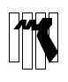

 
En este documento se introduce el lenguaje de programación python y sus elementos sintácticos más básicos
1 ¿Qué es Python?
Python es un lenguaje de programación interpretado creado por Guido Van Rossum, el cual destaca por su sintaxis sencilla y por su facilidad de aprendizaje. A diferencia de otros lenguajes, Python es un lenguaje de programación de propósito general, aunque en los últimos años ha ganado bastante popularidad dentro de los ámbitos de la inteligencia artificial y el análisis de datos por la gran variedad de librerías disponibles listas para su uso. Realizar un prototipo en Python es muy rápido debido a su sintaxis y amplia gama de librerías disponibles.
Python destaca por:
- Tener una sintaxis o reglas de programación fáciles de leer, entender y por tanto de mantener y/o modificar. Se dice que el código producido con Python es limpio por estos mismos motivos, aunque claro, esto también depende de la habilidad del programador para expresar sus ideas en código.
- Es muy productivo. En unas pocas líneas o instrucciones de código es capaz de conseguir representar más trabajo que otros muchos lenguajes de programación. Esto hace que sea muy atractivo para los programadores, que evidentemente prefieren escribir cientos de líneas de código a miles de ellas.
- Es un lenguaje de propósito general y por tanto puede ser empleado para una infinidad de tareas como ahora pequeños programas para descargar datos, programar la lógica de un servidor Web, programar sistemas distribuidos, cálculo científico, o las populares aplicaciones en inteligencia artificial y análisis de datos.
- Es un lenguaje de programación que cuenta con una gran comunidad de personas que ha facilitado su aprendizaje, extensión, así como que seamos capaces de encontrar código reutilizable en forma de librerías de utilidades.
2 Programas en python
Un programa de Python es un fichero de texto que contiene expresiones y sentencias del lenguaje Python
Un programa puede estar formado por los siguientes elementos: - palabras reservadas (keywords) - funciones integradas (built-in functions) - literales - operadores - delimitadores - identificadores
2.1 Sangrado
Los espacios al principio de una línea (el sangrado) indican un nivel de agrupamiento
3 Valores básicos
En Python, tenemos cuatro tipos básicos de valores: int, float, string, y bool. En la siguiente tabla podemos encontrar ejemplos de su declaración.
Tipo de valor |
Descripción |
Ejemplos de uso |
|---|---|---|
int |
Valor numérico de tipo entero |
x = 23 |
float |
Valor numérico de tipo coma flotante o decimal |
y = 11.34 |
string |
Sirve para representar valores de tipo texto (i.e., cadenas). Para representar cadenas de texto se emplazan o bien entre comillas simples o bien entre comillas dobles, pero no mezcladas. |
c = ’¡Hola Mundo! c2 = “¡Hola Mundo!” |
bool |
Únicamente puede tomar dos valores True (algo que es cierto) y False (algo que es falso) |
a = True b = False |
4 Creación de variables
Una variable se puede entender como una especie de caja en la que se puede guardar un valor
Cuando se asigna por primera vez un valor a una variable, Python:
- crea un objeto para almacenar el valor (si no existe todavía)
- crea la variable
- asocia la variable al objeto. El valor de la variable es el valor almacenado por el objeto.
4.1 Nombres de variables
- El nombre de la variable debe estar relacionado con la información que aporta
- Debe comenzar por letra o _ y puede seguir con más letras, números o _
- No pueden incluir espacios en blanco
- Se recomienda utilizar el alfabeto inglés (sin ñ o tildes)
- Python distingue entre mayúsculas y minúsculas
4.2 Utilizar o modificar variables ya definidas
Una vez se ha definido una variable, se puede utilizar para hacer cálculos o para definir nuevas variables. Ejemplo:
horas = 1
minutos = 2
segundos = 3
resultado = segundos + 60 * minutos + 3600 * horas
print(resultado)5 Referencias
- Página oficial del lenguaje Python python.org
- Descarga del entorno de programación Visual Studio Code
- Recursos adicionales Curso python mclibre